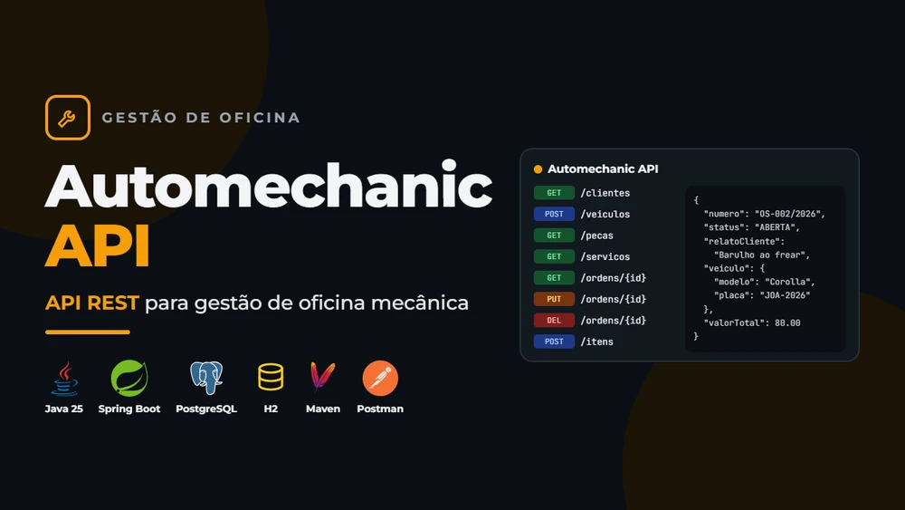

Automechanic API
API REST para organizar clientes, veículos, peças, serviços e ordens de serviço de uma oficina. Desenvolvi o backend com cálculo de valores e validações das regras de negócio.
Arquitetura em camadas, persistência com JPA e perfis de ambiente. O projeto inclui testes de regressão para descontos, vínculos entre registros e respostas HTTP.
Cenário de validação desconto < 0 → HTTP 400